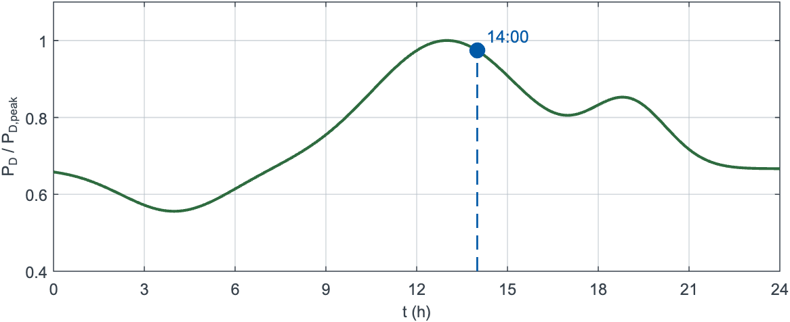
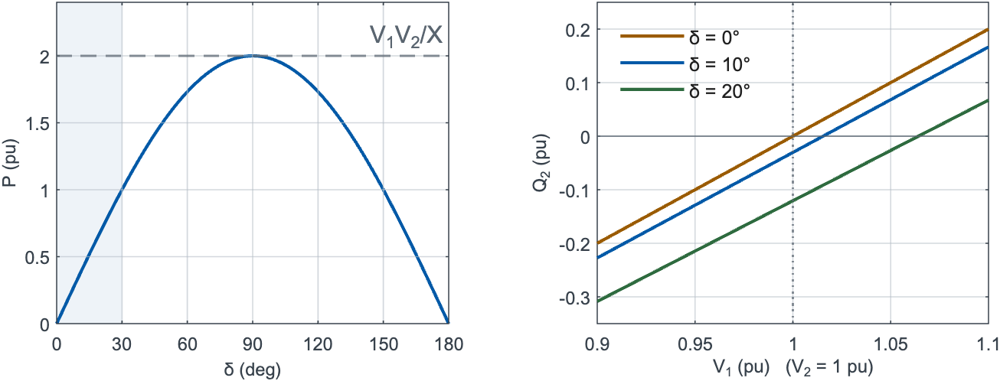
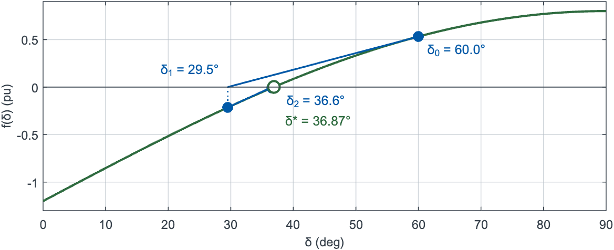
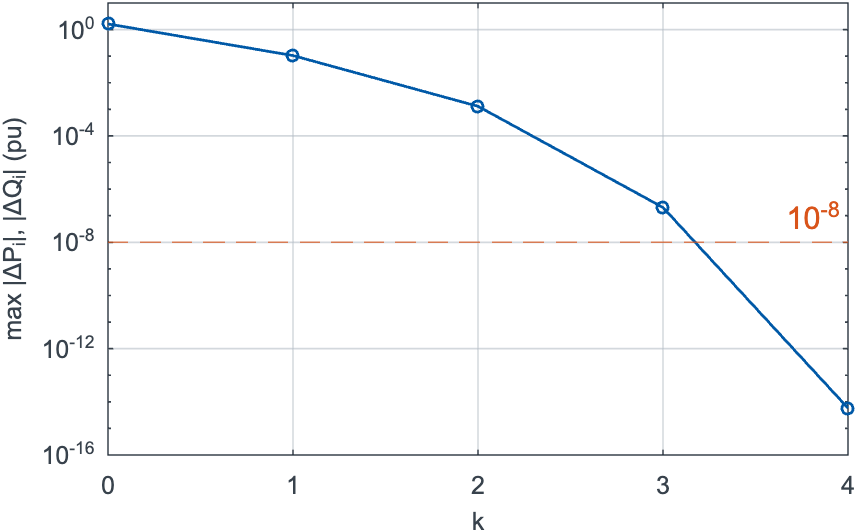
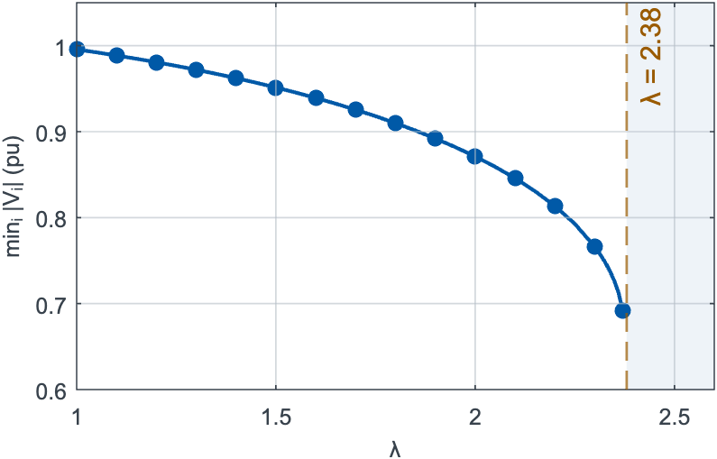
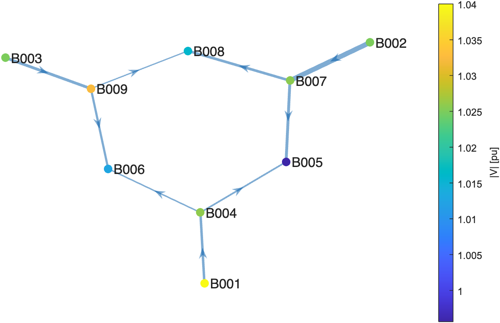

What this Part coversこの Part の内容
- What a power flow calculation finds: one steady operating state, like a photograph of the system.潮流計算が求めるもの。系統のある瞬間の、変わらない運転状態（運転状態の「写真」）。
- Which two quantities are fixed and which two are solved at each kind of bus (slack, PV, PQ).母線の種類（slack・PV・PQ）ごとに、決めておく 2 つの量と、計算で求める 2 つの量。
- Why active power flows with the angle difference and reactive power with the voltage difference.有効電力は位相の差で、無効電力は電圧の大きさの差で流れる理由。
- How Newton's method solves the power-flow equations, and why it sometimes fails.ニュートン法で電力方程式を解く仕組みと、解けないことがある理由。
- How to read the result, using the IEEE 9-bus system, and why it is the starting point of a time-domain simulation.IEEE 9 母線系統を例にした結果の読み方と、それが時間シミュレーションの出発点になる理由。
The power flow: a photograph of the operating state潮流は運転状態の「写真」
Demand changes through the day, and the generators follow it. Over a few minutes, however, the demand and the output of each generator hardly change, and the system stays in a steady state. The power flow (load flow) is this steady state: the voltage at every bus and the power on every line. A power flow calculation computes it for one given condition of demand and generation, like taking a photograph of the system at one moment.
需要は一日の中で変わり、発電機の出力もそれに合わせて変わります。しかし数分程度の間なら、需要も各発電機の出力もほとんど変わらず、系統は落ち着いた状態にあります。この落ち着いた状態での、各母線の電圧と各送電線を流れる電力の分布を潮流といいます。潮流計算は、ある需要と発電の条件のもとでの潮流を求める計算です。系統のある瞬間の「写真」を撮るようなものです。

The photograph tells us whether the operation planned for that moment is acceptable: whether the voltages stay within their range and whether any line carries more than it can. Operators repeat this check for many conditions, such as the peak of the day, the night, or a line taken out of service.
この「写真」を見ると、その時刻に計画した運転で問題がないか、つまり電圧が範囲内に収まっているか、容量を超えて電力が流れる送電線がないかが分かります。一日のピーク、夜間、送電線を 1 本止めたときなど、いろいろな条件でこの確認を繰り返します。
A photograph shows no motion. The power flow does not tell what happens when the condition changes suddenly, for example at a fault; that is the job of the time-domain simulation. The last section explains how the two are connected.
写真には動きが写りません。事故のように条件が急に変わったときに何が起きるかは、潮流計算では分からず、時間シミュレーションで調べます。二つのつながりは最後の節で説明します。
What is fixed and what is solved at each bus母線ごとに決める量と求める量
In AC, the voltage at a bus has a magnitude and a phase angle (how far its wave is ahead of or behind a reference). The power injected into the network at the bus has an active power and a reactive power . Each bus thus has four quantities. The network gives two equations per bus (one for and one for ), so two of the four must be fixed in advance and the other two are solved.
交流では、母線の電圧に大きさ と位相角 （基準に対して波がどれだけ進んでいるか、遅れているか）があります。母線からネットワークに注入する電力には、有効電力 と無効電力 があります。つまり母線ごとに 4 つの量があります。ネットワークからは母線ごとに 2 本の式（ の式と の式）が得られるので、4 つのうち 2 つを先に決めておき、残りの 2 つを計算で求めます。
- PQ busPQ 母線
- A load consumes a known amount of power, so P and Q are fixed (negative, because power is taken out of the network). A bus with no equipment is also a PQ bus with P = Q = 0. Its voltage is the result.負荷が使う電力は分かっているので、P と Q を決めます（ネットワークから電力を取り出すので負の値です）。機器のない母線も、P = Q = 0 の PQ 母線です。電圧は計算の結果として決まります。
- PV busPV 母線
- A generator is told how much active power to produce, and its voltage controller (AVR) holds the voltage magnitude. The generator supplies whatever reactive power is needed for that, so Q is solved.発電機には出す有効電力が指示され、電圧の調整装置（AVR）が電圧の大きさを一定に保ちます。そのために必要な無効電力は発電機が自然に出すので、Q は計算で求めます。
- Slack busslack 母線
- The losses are not known before the calculation, so no one can fix the active power of every generator in advance. One generator bus takes up the remainder: its P and Q are solved. Its angle is set to 0 and becomes the reference for all other angles.損失は計算してみるまで分からないので、すべての発電機の有効電力を先に決めることはできません。そこで 1 つの発電機の母線が残りを引き受け、その P と Q を計算で求めます。この母線の位相角を 0 とし、ほかの母線の位相角の基準にします。
In GUILDA, the user chooses the slack bus; GUILDA never picks one. The other buses get their type from the equipment connected to them: a bus with a generator, which leaves its reactive power open, is a PV bus, and the other buses are PQ buses. To see the table of types and fixed values that the calculation uses, for the IEEE 9-bus system:
GUILDA では、slack 母線は利用者が選びます。GUILDA が自動で選ぶことはありません。ほかの母線の種類は、つながっている機器で決まります。無効電力を決めずにおく発電機がある母線は PV 母線、それ以外は PQ 母線です。計算に使う種類と指定値の表は、IEEE 9 母線系統なら次のように確かめられます。
net = network.IEEE9bus();
net.get_pf_condition()Active power follows the angle, reactive power the voltage有効電力は位相差で、無効電力は電圧差で流れる
Take two buses joined by a line. Transmission lines are mostly inductive, so we keep only the reactance of the line and ignore its resistance. With the voltage magnitudes , and the angles , of the two buses, the active power sent from bus 1 to bus 2 is then
2 つの母線を 1 本の送電線でつないだ場合を考えます。送電線はほとんどがインダクタンスの性質を持つので、抵抗を無視し、リアクタンス だけを考えます。2 つの母線の電圧の大きさを 、、位相角を 、 とすると、母線 1 から母線 2 に送られる有効電力は次の式になります（抵抗がないので損失はなく、母線 2 に届く有効電力も同じです）。
- This is the power flowing on the line!これが送電線を流れる電力！
- The most the line can carry: smaller for a longer line送れる電力の上限（線が長いほど小さい）
- Set by the angle difference位相差で決まる
Active power flows from the bus whose angle is ahead to the bus whose angle is behind, and the larger the angle difference , the more power flows. The voltage magnitudes stay close to 1 pu in normal operation, so it is mainly the angle that moves the active power.
有効電力は、位相が進んだ母線から遅れた母線に流れ、位相差 が大きいほど多く流れます。ふだんの運転では電圧の大きさはどこも 1 pu に近いので、有効電力を動かすのは主に位相差です。

The curve also shows a limit: a line cannot carry more active power than , however large the angle difference becomes. Long lines (large ) and low voltages make this limit smaller.
曲線からは限界も読み取れます。位相差をいくら大きくしても、送電線は より多くの有効電力を送れません。送電線が長い（ が大きい）ほど、また電圧が低いほど、この限界は小さくなります。
For the same line, the reactive power that arrives at bus 2 is
同じ送電線で、母線 2 に届く無効電力は次の式になります。
When the angle difference is small, is close to 1 (above 0.98 for ), and the formula becomes approximately
位相差が小さいときは がほぼ 1 なので（ なら 0.98 以上）、近似的に次の式になります。
- Reactive power arriving at bus 2母線 2 に届く無効電力
- The voltage difference drives the reactive power!電圧の差が無効電力を流す！
Reactive power flows from the higher voltage to the lower voltage. Turned around, a bus that draws a lot of reactive power pulls its own voltage down. This is why voltage is kept up by supplying reactive power near where it is needed, and why the voltage, unlike the frequency, differs from bus to bus.
無効電力は、電圧の高い母線から低い母線に流れます。逆にいえば、無効電力を多く使う母線では、その母線の電圧が下がります。電圧を保つには必要な場所の近くで無効電力を供給すること、そして周波数と違い電圧が母線ごとに異なることは、この性質から来ています。
Rule of thumb on transmission networks: P ↔ angle difference, Q ↔ voltage difference. It holds because the lines are mostly reactive and the angle differences are small; on distribution lines with a large resistance it holds less well.
送電網での目安: P は位相差、Q は電圧差で流れます。送電線がほぼリアクタンスだけで、位相差が小さいから成り立つ関係です。抵抗の大きい配電線では、あまり当てはまりません。
Newton's method in picturesニュートン法を図で
For a network of buses, the power that flows from bus into the network follows from the voltages of all buses and the elements of the bus admittance matrix (the matrix that gives the bus currents from the bus voltages, ). These are the power equations:
母線の系統で、母線 からネットワークに流れ出す電力は、すべての母線の電圧と、母線アドミタンス行列（母線電圧から母線電流を与える行列、）の要素 で決まります。これが電力方程式です。
- Power that bus sends into the network母線 から送電網へ流れ出す電力
- Real part of (conductance) の実部（コンダクタンス）
- Imaginary part of (susceptance) の虚部（サセプタンス）
At the solution, these must equal the powers , fixed at each bus. The differences are called the mismatches:
解では、これが各母線で決めた電力 、 に等しくなければなりません。その差を不平衡量（ミスマッチ）といいます。
- This is the mismatch: make it 0!これが不平衡量！ 0 にしたい
- The value fixed at the bus母線ごとに決めた値
- Computed from the trial voltages仮の電圧から計算した値
The unknowns are the angles of all buses except the slack bus and the voltage magnitudes of the PQ buses; the equations are at the same buses and at the PQ buses, as many as the unknowns. They are nonlinear (products of voltages and sines and cosines of angles), so they cannot be solved in one step. The calculation guesses the voltages, measures the mismatches, corrects the guess, and repeats.
未知数は、slack 母線以外のすべての母線の位相角と、PQ 母線の電圧の大きさです。式は、同じ母線の と PQ 母線の で、未知数と同じ数だけあります。電圧どうしの積や位相角の sin・cos を含む非線形の式なので、一度では解けません。電圧を仮に決め、不平衡量を測り、仮の値を直す、という手順を繰り返して解きます。
Newton's method (the Newton–Raphson method) is the standard way to correct the guess. Think of one unknown and a mismatch that should become 0. At the current guess, draw the tangent of the curve and move to where the tangent crosses zero:
仮の値の直し方として標準的なのがニュートン法（ニュートン・ラフソン法）です。未知数が 1 つ で、0 にしたい不平衡量が だとします。今の仮の値で曲線の接線を引き、接線が 0 になる点に移ります。
- The present mismatch今の不平衡量
- Slope of the tangent: the Jacobian with many unknowns接線の傾き（未知数が多いとヤコビアン）
- This is the next trial value!これが次の仮の値！

In a real network the unknowns are the angles and voltage magnitudes above, and the slope becomes a matrix, the Jacobian . It says how much each power changes when each voltage or angle changes a little. Each step solves one linear system with this matrix, evaluated at the current guess, and adds the result:
実際の系統では、未知数は上の位相角と電圧の大きさで、傾き はヤコビ行列（ヤコビアン） という行列になります。電圧や位相角を少し変えたとき、各母線の電力がどれだけ変わるかを並べた行列です。1 回の反復ごとに、今の仮の値で計算したこの行列を使って連立一次方程式を 1 つ解き、その解を足します。
Here , , and are the vectors of the unknowns and the mismatches, and counts the iterations. With one unknown and one equation it is the tangent step above, since . Near the solution the error roughly squares at every step, so the number of correct digits about doubles. The usual first guess is the flat start: all angles 0 and all magnitudes 1 pu (the fixed values where they are given).
ここで 、、、 は未知数と不平衡量を並べたベクトル、 は反復の回数です。未知数と式が 1 つずつなら、 なので上の接線の一歩と同じです。解の近くでは誤差が反復ごとにおよそ 2 乗になるので、正しい桁数がほぼ倍に増えていきます。最初の仮の値には、すべての位相角を 0、電圧の大きさを 1 pu（指定のある母線はその値）とするフラットスタートがよく使われます。

plot_convergence, log scale). It drops below the tolerance 10⁻⁸ pu (dashed) after four iterations.plot_convergence で描画、対数目盛）。4 回の反復で許容値 10⁻⁸ pu（破線）を下回ります。GUILDA's power flow calculation uses Newton's method by default and stops when the largest mismatch is below the tolerance. Other methods can be chosen as an option; their details are left to the Live Script. To solve the IEEE 9-bus system from the flat start and draw the mismatch at each iteration:
GUILDA の潮流計算は、既定ではニュートン法を使い、不平衡量の最大値が許容値を下回ったところで止まります。オプションでほかの計算方法も選べますが、詳しくはライブスクリプトで扱います。IEEE 9 母線系統をフラットスタートから解き、反復ごとの不平衡量を図にするには次のようにします。
net = network.IEEE9bus();
result = net.calculate_powerflow(WarmStart=false);
result.plot_convergence();When the calculation does not converge収束しないとき
Newton's method does not always reach a solution. The most important reason is that no solution exists: if the loads ask for more power than the network can deliver, no set of voltages satisfies the equations. As the loads grow, the voltages fall faster and faster, and beyond some point the calculation fails.
ニュートン法がいつも解にたどり着くとは限りません。いちばん大切な理由は、解がそもそも存在しないことです。ネットワークが送れる以上の電力を負荷が求めると、電力方程式を満たす電圧はありません。負荷を増やしていくと電圧は加速度的に下がり、ある所から先では計算が失敗します。

The curve bends down sharply just before the edge. Near this edge the Jacobian approaches a singular matrix, the tangent in the picture above becomes flat, and Newton's steps become unreliable. Following this curve to its end, the "nose", is the subject of the continuation power flow (Part 7).
曲線は、端の手前で急に折れ曲がります。この端の近くではヤコビ行列が特異（逆行列がない状態）に近づき、上の図の接線が水平に近くなって、ニュートン法の一歩が当てにならなくなります。この曲線を先端（ノーズ点）までたどるのが、連続潮流計算（Part 7）です。
Other common causes are mistakes in the data, such as a wrong sign of a load or a line reactance that is far too large; a part of the network cut off from the slack bus; and a first guess that is too far from the solution. When the calculation fails, it is worth checking the data and the loads first.
ほかによくある原因は、負荷の符号の間違いや桁違いに大きなリアクタンスといったデータの誤り、slack 母線から切り離されたネットワークの一部、解から遠すぎる最初の仮の値などです。計算が失敗したときは、まずデータと負荷の大きさを確かめるとよいでしょう。
GUILDA reports the outcome in the second output flag of the power flow calculation: 1 when it converged, 0 when it reached the iteration limit, and −2 when no solution was found. By default a failure also gives a warning, so a failed result is not used without notice.
GUILDA は、潮流計算の 2 番目の出力 flag で結果を知らせます。収束したときは 1、反復回数の上限に達したときは 0、解が見つからなかったときは −2 です。既定では失敗したときに警告も出るので、失敗した結果を知らずに使うことはありません。
[result, flag] = net.calculate_powerflow();Reading the result: the IEEE 9-bus system結果の読み方: IEEE 9 母線系統
The IEEE 9-bus system (also known as the WSCC 9-bus system) is a small benchmark with three generators and three loads. Bus 1 is the slack bus; buses 2 and 3 are PV buses; the loads are at buses 5, 6 and 8; buses 4, 7 and 9 have no equipment. The figure shows its power flow computed with GUILDA.
IEEE 9 母線系統（WSCC 9 母線系統とも呼ばれます）は、発電機 3 台と負荷 3 つからなる小さなベンチマーク系統です。母線 1 が slack 母線、母線 2 と 3 が PV 母線で、負荷は母線 5、6、8 にあり、母線 4、7、9 には機器がありません。図は、GUILDA で計算したこの系統の潮流です。

plot_diagram). The colour of each bus is its voltage magnitude (pu). The small white triangles on each branch point in the direction of the active power. The values below are those of result.tab_bus and result.tab_branch; every triangle points from the larger angle to the smaller one.plot_diagram で描いた IEEE 9 母線系統の潮流です。母線の色は電圧の大きさ （pu）です。ブランチ上の白い小さな三角は有効電力の向きを指しています。下の値は result.tab_bus と result.tab_branch のものです。どの三角も、位相角の大きい母線から小さい母線へ向いています。Some points to read from the picture:
図から次のことが読み取れます。
- Voltages. All magnitudes lie between 0.996 and 1.040 pu. The lowest is at bus 5, which has the largest load.電圧: 大きさはすべて 0.996〜1.040 pu の間にあります。最も低いのは、負荷が最も大きい母線 5 です。
- Angles and flows. Bus 2, whose generator produces the most, has the largest angle (9.28°); the load buses 5 and 6 have negative angles (−3.99° and −3.69°), and bus 2 sends 1.63 pu to bus 7. The active power runs downhill in angle, as in the two-bus example.位相角と潮流: 出力の最も大きい発電機がある母線 2 の位相角が最も大きく（9.28°）、負荷のある母線 5 と 6 は負の位相角（−3.99° と −3.69°）です。母線 2 から母線 7 へは 1.63 pu が流れます。2 母線の例のとおり、有効電力は位相角の「坂」を下る向きに流れます。
- The slack bus. Generators 2 and 3 produce the fixed 1.63 and 0.85 pu. Generator 1 produces what is left, 0.72 pu, which covers the loads (1.25 + 0.90 + 1.00 = 3.15 pu at buses 5, 6 and 8) and the losses.slack 母線: 発電機 2 と 3 は決めた 1.63 pu と 0.85 pu を出します。発電機 1 は残りの 0.72 pu を出し、負荷（母線 5・6・8 の 1.25 + 0.90 + 1.00 = 3.15 pu）と損失をまかないます。
- Losses. The total generation is 3.196 pu, so the active losses are 0.046 pu, about 1.5 % of the load. On each line with resistance, the power at the receiving end is a little smaller than at the sending end.損失: 発電の合計は 3.196 pu なので、有効電力の損失は 0.046 pu で、負荷の約 1.5 % です。抵抗のある送電線では、受け取る側の端の電力が、送り出す側よりわずかに小さくなります。
In GUILDA, the power flow calculation returns a result object. Its disp_summary prints the outcome, the totals of generation, load and losses, and the range of voltages; result.tab_bus and result.tab_branch hold the values of each bus and branch; plot_voltage and plot_diagram draw them, and plot_single_line_diagram draws a black-and-white single-line diagram for papers. The power flow does not change the model.
GUILDA では、潮流計算が結果のオブジェクトを返します。その disp_summary は計算の結果、発電・負荷・損失の合計、電圧の範囲を表示します。母線ごと、ブランチごとの値は result.tab_bus と result.tab_branch にあり、plot_voltage や plot_diagram で図にできます。plot_single_line_diagram は論文向けの白黒の単線結線図を描きます。潮流計算はモデルを書き換えません。
net = network.IEEE9bus();
result = net.calculate_powerflow();
result.disp_summary();
result.plot_voltage();
result.plot_diagram(BusColorMode="V", ColorMode="none");The starting point of a time-domain simulation時間シミュレーションの出発点
A time-domain simulation computes how the system moves after a disturbance such as a fault. It needs a state to start from, and the natural choice is the steady state before the disturbance. The power flow provides it: from the voltage and current at each generator bus, the internal quantities of the generator (rotor angle, internal voltage, mechanical input) are computed so that nothing moves as long as nothing happens. This state is the equilibrium.
時間シミュレーションは、事故などの外乱の後に系統がどう動くかを計算します。そのためには出発点の状態が必要で、自然な選び方は外乱が起きる前の落ち着いた状態です。それを与えるのが潮流計算です。各発電機の母線の電圧と電流から、発電機の内部の量（回転子の角度、内部の電圧、機械入力）を、何も起きなければ何も動かないように計算します。この状態が平衡点です。
If the simulation started from a state that is not an equilibrium, the system would move even without any disturbance, and we could not tell the response to the fault from this artificial motion. The same equilibrium is also the point around which the model is linearized (Part 5).
平衡点でない状態から始めると、外乱がなくても系統が動き出してしまい、事故への応答とこの見かけの動きを区別できません。同じ平衡点は、モデルを近似線形化するときの基準の点にもなります（Part 5）。
In GUILDA, initialize solves the power flow and sets the equilibrium of every component and controller from it. A time-domain simulation starts from this initialized state.
GUILDA では、initialize が潮流計算を解き、その結果からすべての機器と制御器の平衡点を設定します。時間シミュレーションは、この初期化した状態から始まります。
net = network.IEEE9bus();
net.initialize();Summaryまとめ
- The power flow is the steady operating state for one condition of demand and generation: the voltage at every bus and the power on every line.潮流は、ある需要と発電の条件での落ち着いた運転状態で、各母線の電圧と各送電線の電力の分布です。
- Each bus has four quantities (V, θ, P, Q); two are fixed and two are solved. Slack: V, θ fixed. PV: P, V fixed. PQ: P, Q fixed.母線ごとの 4 つの量（V・θ・P・Q）のうち 2 つを決め、2 つを求めます。slack は V と θ、PV は P と V、PQ は P と Q を決めます。
- On transmission networks, active power flows with the angle difference and reactive power with the voltage difference.送電網では、有効電力は位相差で、無効電力は電圧の大きさの差で流れます。
- The power equations give P and Q of each bus from the voltages and the admittance matrix; the power flow makes their mismatches zero.電力方程式は、電圧とアドミタンス行列から各母線の P と Q を与えます。潮流計算は、その不平衡量を 0 にする計算です。
- Newton's method follows the tangent (the Jacobian) to correct the guess and converges in a few iterations; it fails when no solution exists, for example when the loads are too large.ニュートン法は接線（ヤコビ行列）をたどって仮の値を直し、数回の反復で収束します。負荷が大きすぎるなど、解が存在しないときは失敗します。
- The power flow gives the equilibrium from which a time-domain simulation starts.潮流計算の結果から平衡点が決まり、時間シミュレーションはそこから始まります。
References参考文献
- T. Ishizaki (ed.), T. Kawaguchi and K. Kawabe,石崎孝幸 編著、川口貴弘・河辺賢一 著、 電力系統のシステム制御工学 – システム数理と MATLAB シミュレーション –, Corona Publishing, 2022 (in Japanese).、コロナ社、2022 年（計測・制御セレクションシリーズ 4）。 The textbook GUILDA is based on; it explains power system models in the language of systems and control.GUILDA の基になった教科書です。電力系統のモデルをシステム制御の言葉で説明しています。
- P. Kundur and O. P. Malik, Power System Stability and Control, 2nd ed., McGraw Hill, 2022. Power transfer over a line, the relation of active power to angle and of reactive power to voltage, and power-flow analysis.送電線による電力の伝送、有効電力と位相角・無効電力と電圧の関係、潮流計算を扱っています。
- J. Machowski, Z. Lubosny, J. W. Bialek and J. R. Bumby, Power System Dynamics: Stability and Control, 3rd ed., Wiley, 2020. The steady-state model of the network, the bus types, and the Newton–Raphson power flow.ネットワークの定常状態のモデル、母線の種類、ニュートン・ラフソン法による潮流計算を扱っています。